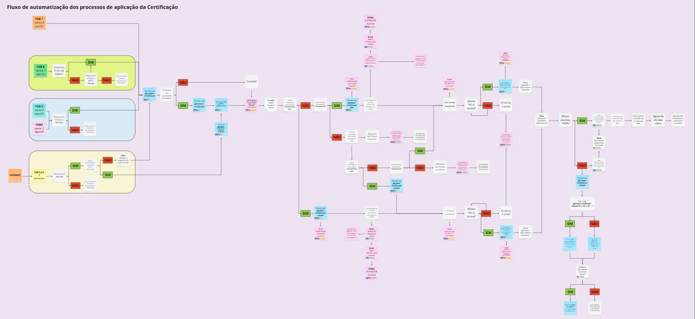

Automatização de envio de comunicações de provas online
Analista de Produtos
Ano: 2024
Sistema de identificação de alunos que precisam ser convidados para realizar uma prova de certificação online, desenvolvido para reduzir a necessidade de operação manual.
Desafio
Projetar um sistema de tagueamento automatizado dos alunos que já estavam na base e dos que futuramente iriam entrar.
Soluções
Definir tags para os módulos obrigatórios que os alunos precisavam concluir para poder realizar a prova, desenvolver sistemas de automações que “tagueassem” os alunos com essas tags dos módulos à medida que progredissem nos cursos.
Resultado
Conseguimos reduzir a quantidade de horas de trabalho da equipe de atendimento em 30% para enviar lembretes e comunicados para os alunos fazerem as provas.
Aprenizado-chave
Ao automatizar e documentar processos repetitivos do atendimento, percebi que liberamos tempo para focar no que realmente importa: resolver demandas complexas e melhorar a experiência do aluno de forma mais ágil e personalizada.